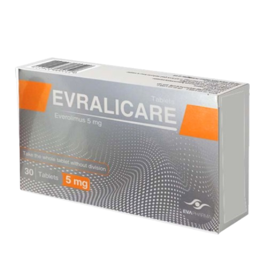

EVA Pharma
Evralicare contains everolimus, an oral inhibitor of the mammalian target of rapamycin (mTOR). By inhibiting the mTOR pathway, everolimus suppresses tumor cell growth, proliferation, metabolism, and angiogenesis in selected malignancies.
Evralicare
Everolimus
mTOR Inhibitor
Oral
EVA Pharma
Everolimus is a selective inhibitor of the mammalian target of rapamycin (mTOR), a central regulator of cell growth, proliferation, metabolism, and angiogenesis. Everolimus binds to FKBP-12, forming a complex that inhibits mTORC1 signaling. This results in inhibition of downstream pathways involved in protein synthesis and cell-cycle progression, leading to reduced tumor cell proliferation and growth. Everolimus also inhibits angiogenic signaling, contributing to its antitumor activity.
| Trial | Setting | Outcome |
|---|---|---|
| BOLERO-2 | HR-positive, HER2-negative advanced breast cancer | Improved progression-free survival when everolimus was combined with exemestane. |
| RADIANT-4 | Advanced non-functional neuroendocrine tumors | Improved progression-free survival compared with placebo. |
| RECORD-1 | Advanced renal cell carcinoma | Improved progression-free survival compared with placebo after VEGFR-targeted therapy. |
The recommended dose of everolimus for many oncology indications is: 10 mg once daily continuously, with or without food, at approximately the same time each day. For HR-positive, HER2-negative advanced breast cancer, everolimus is administered in combination with exemestane.
| Recommended Dose | 10 mg Once Daily |
|---|---|
| Route | Oral |
| Schedule | Continuous Treatment |
| Administration | With or without food; maintain consistency in administration with regard to food. |